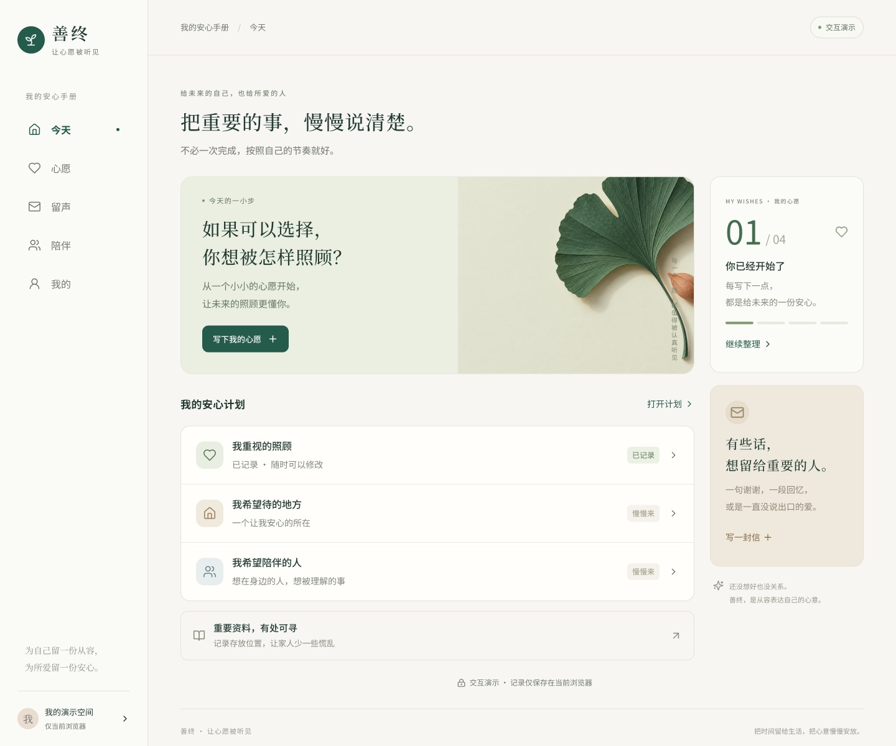
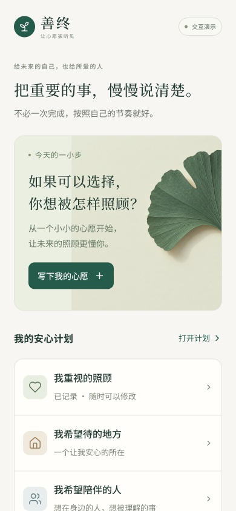
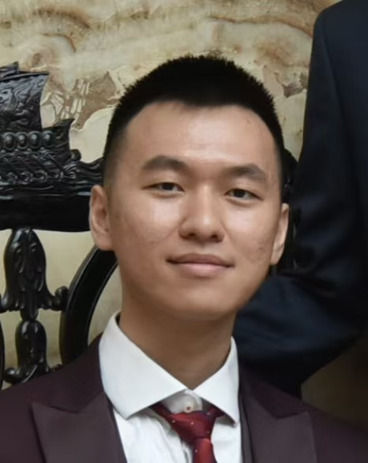

Personal product · 2026
Good Die善终
A calm space for saying what matters before it is too late: wishes, letters to loved ones and the people you trust, one small step at a time.


I turn medical research into things people can use, from fibre-optic needle tracking to trustworthy AI for dentistry.

I’m Weidong (James) Liang, a biomedical engineer and Postdoctoral Research Associate in the Translational AI Research (TAIR) Lab at King’s College London.
My current work focuses on developing trustworthy AI tools to help dentists review clinical records, identify documentation gaps and improve record quality. I work closely with clinicians and AI researchers, bringing together clinical guidance, expert feedback and user-centred design to support tools that fit everyday dental practice.
My research interests span healthcare AI, biomedical imaging, image-guided interventions and medical device development. I’m particularly interested in translating engineering research into practical solutions to clinical problems, connecting technical development with clinical evaluation and entrepreneurship.
My doctoral research in Biomedical Engineering at King’s College London focused on 3D volumetric ultrasound imaging and fibre-optic needle tracking for image-guided procedures, under the supervision of Dr Wenfeng Xia and Professor Sebastien Ourselin FREng.
I hold an MRes in Medical Device Design and Entrepreneurship from Imperial College London, where I was supervised by Professor Dario Farina and Professor James Moore Jr. I also earned a first-class BEng in Mechanical Engineering from the University of Birmingham, where I was supervised by Professor Duc Truong Pham OBE, FREng.
At the Centre for Oral, Clinical & Translational Sciences (COCTS), King’s College London, I develop trustworthy AI that helps dentists review clinical records, identify documentation gaps and improve record quality — delivered as Software as a Medical Device, working with clinicians and AI researchers.
A spinout from King’s College London developing Software as a Medical Device (SaMD). I serve as its Complaint Officer, handling product complaints and post-market feedback.
A medical device company and quasi-spinout from King’s College London, developing ultrasound-guided fibre-optic needle tracking from my PhD. I led strategy, fundraising, product development and clinical translation.
I founded the DeepTech Founders’ Club under the Outstanding Young Scholars Society (OYSS) UK, a society of Chinese scholars and entrepreneurs in the UK led by Prof Sai Gu FREng, Deputy Pro-Vice-Chancellor (East and South East Asia) at the University of Warwick. The club brings together 3,000+ researchers, founders, investors and industry partners to get more deep tech out of universities.
An Imperial College spinout developing a wearable robotic hand, now known as Neubond. It builds affordable, accessible neuro-rehabilitation technology that brings therapy into daily life for people recovering from stroke. It grew out of my MRes, and it was my first venture: I did the market research and business plan, and pitched it.
A calm space for saying what matters before it is too late: wishes, letters to loved ones and the people you trust, one small step at a time.


AI that helps dental clinicians check their own records for gaps and risks, developed with clinicians and industry partners as Software as a Medical Device. More to share soon.
AI + AR support for stroke patients after hospital discharge.
Cambridge RealityX · Track WinnerAn AI-generated music platform.
An accountability community for early risers.
A needle that tells the scanner where it is.
My PhD at the School of Biomedical Engineering & Imaging Sciences tackled a simple problem: under ultrasound, a needle tip is easy to lose. I built fibre-optic transducers that sit inside the needle and talk to the probe, so the tip can be located in 3D, in real time, on a volumetric image.
I validated the system on a femoral nerve block simulator, a step towards safer regional anaesthesia, then co-founded Beacon Surgical to take it towards the clinic.
A 2D matrix probe has thousands of elements. To image and track in 3D with far fewer channels, the active elements can be placed on a Fermat’s spiral, each rotated by the golden angle from the last.
The layout covers the aperture evenly but never repeats, which suppresses grating lobes. When the needle tip sends a pulse, each element hears it at a slightly different time, and those delays pinpoint the tip in 3D.
6 first-author and 7 collaborative works in total. The full list is in my CV.
I’m glad to talk with founders, investors, clinicians and researchers.